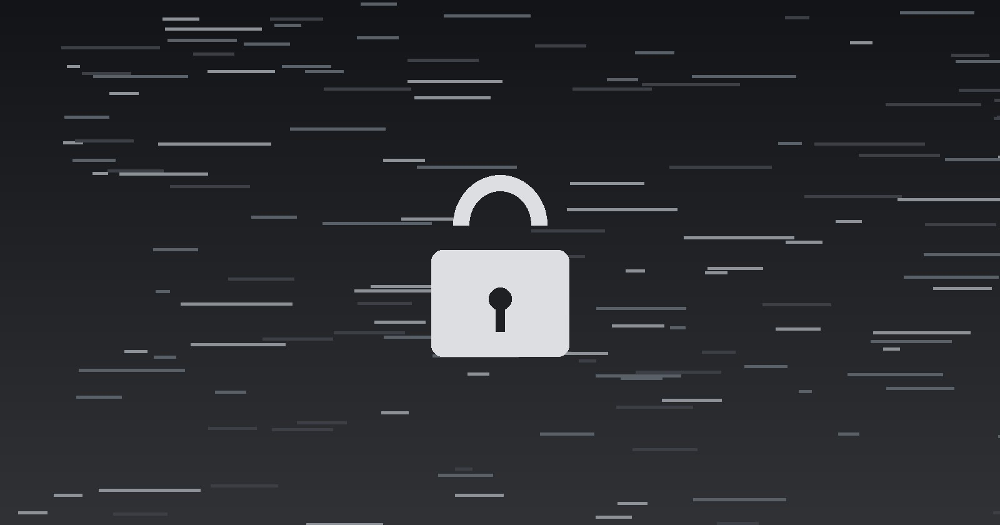
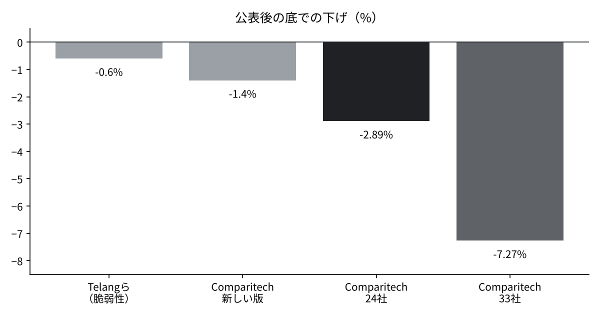
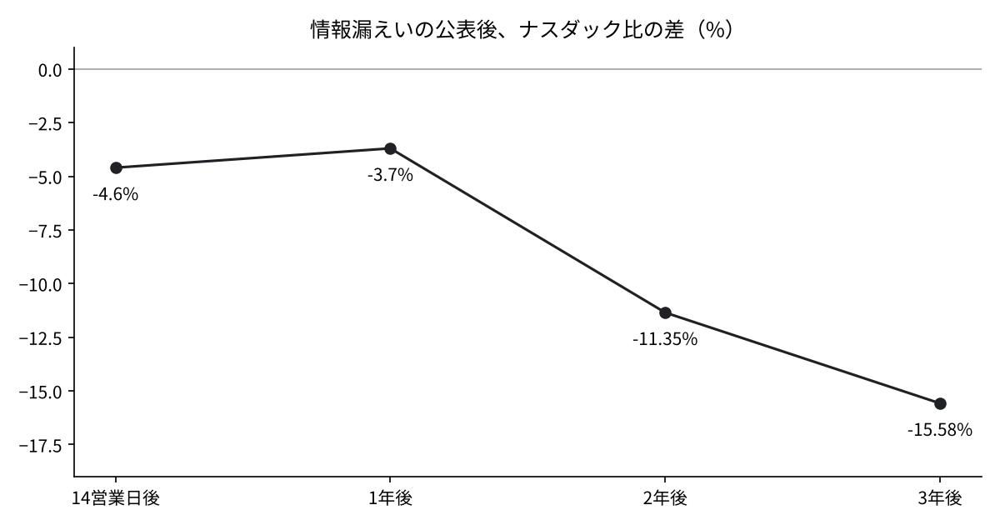

京成337万件とKADOKAWAのランサムウェア――不正アクセスを公表した会社の株価は何%下がり、何日で戻るのか
11月11日の深夜、京成スカイライナーの予約システムに不正アクセスがあり、最大約337万件の個人情報が漏えいした可能性が公表された。
日本でも、口座の乗っ取り、ランサムウェアによる停止、顧客情報の流出と、不正アクセスの公表は珍しくなくなった。
本稿の問いは、不正アクセスを公表した上場企業の株価は、公表のあと何%下がり、何日で戻るのか、そして攻撃の種類で違いがあるのか、である。

- 情報漏えいの公表で、株価は平均で数%下がり、底は公表から2週間前後に来る。米国の24社の分析では14営業日後に−2.89%だった。
- 短期の下げは1〜2か月で戻ることが多いが、指数との差は残り、3年後にはナスダック比で−15.58%まで開いた例がある。
- 業務が止まるランサムウェアは、株価より先に売上と利益に出る。KADOKAWAは売上の減少と特別損失で、被害が損益計算書に残った。
問いと背景
不正アクセスとは、許可なく他人のシステムに入ることを指す。本稿ではこれを3つの型に分ける。型1は情報漏えい（顧客の氏名や連絡先が外に出る）、型2はシステムの停止（ランサムウェアでデータが暗号化され、業務が止まる）、型3は口座の乗っ取り（利用者の口座が勝手に使われる）である。
ランサムウェアとは、データを暗号化して使えなくし、元に戻す代わりに金銭を要求する攻撃を指す。累積異常リターンとは、市場全体の動きで説明できない株価の変化を、数日分足し合わせたものである。
株価が下がる理由として考えられるのは、賠償や復旧の費用、顧客の離反、規制当局の罰金の3つである。型によって、どの費用が大きくなるかが変わる。
データと方法
本稿は、新たに株価を集めて計算した研究ではない。公表された学術研究と調査、企業の開示、当局の統計の数字を、型ごとに並べ直して比べる。
型1には、Acquistiらの研究（米国の上場企業の79件の情報漏えい）と、Comparitechの分析（ニューヨーク証券取引所などの24社）を使う。後者は、公表の前日の株価を基準にし、同じ期間のナスダック指数との差で評価している。
型2には、KADOKAWAの2025年3月期の開示と、トレンドマイクロが整理した国内の特別損失の例を使う。型3には、金融庁が公表した2025年の証券口座の不正アクセスの件数を使う。
攻撃の種類による違いについては、事件の性質と株価の反応を回帰で調べた先行研究の整理を参照した。
比べる指標は3つに絞った。底までの日数、底での下げ幅（指数との差を含む）、公表前の水準に戻るまでの日数である。型2と型3は株価の研究が少ないため、売上・特別損失・被害額の大きさで代わりに見る。


結果
型1の情報漏えいでは、公表の日に統計的に有意な下げが出る。Acquistiらは、その効果が翌日にかけて大きくなり、その後は小さくなって有意でなくなると報告した。
Comparitechの24社では、底は公表から14営業日後で、株価は平均−2.89%、ナスダック比では−4.6%だった。1か月ほどでナスダックとの差は縮まった。
同じ調査の別の版では、33社の底は14営業日後で、平均の下げは−7.27%と大きかった。さらに新しい版では、底は公表から41日後で−1.4%、公表前の水準に戻るまで平均53日だった。版によって数字の幅は大きいが、「2週間から1か月半で底、1〜2か月で戻る」という形は共通している。
業種でも差が出た。Comparitechの分析では、公表直後の下げが最も大きいのは金融で、テクノロジー企業は下げが長く続き、40営業日後にナスダック比−5.3%で底を打った。新しい版では、医療の会社の下げが最も大きく、金融と製造業が続いた。
ただし長い期間で見ると、差は残った。1年後はナスダック比−3.7%、2年後は−11.35%、3年後は−15.58%だった。
| 期間 | 株価の平均 | ナスダック比 |
|---|---|---|
| 14営業日後（底） | −2.89% | −4.6% |
| 1年後 | +8.53% | −3.7% |
| 2年後 | +17.78% | −11.35% |
| 3年後 | +28.71% | −15.58% |
型2のシステムの停止では、株価より損益に先に表れる。KADOKAWAは2024年6月のランサムウェアで動画配信などが約2か月止まり、ウェブ事業の売上は前年から約39億円、出版事業は約36億円減った。2025年3月期には特別損失24億円を見込んだ。約25万人分の個人情報の漏えいも確認され、型1と型2が重なった事例になった。
小売のイズミは特別損失10億円を計上し、その後の半期の純利益は前年同期比22%減となった。被害が一時の費用で終わらず、客足に及んだ例である。物流の関通も、攻撃に伴う損失として約9.9億円を計上した。
型2の費用は、身代金だけでは済まない。Sophosの2024年の調査では、身代金を払った組織の平均の支払額は200万ドルで、身代金を除く復旧の費用の平均は273万ドルだった。警察庁によると、2024年上半期のランサムウェアの被害の報告は114件あった。
型3の口座の乗っ取りは、被害を受けるのが企業ではなく利用者である。金融庁によると、2025年1〜6月の不正アクセスは12,758件、不正取引は7,139件で、売買の額は約5,710億円にのぼった。月別では、3月から急に増え、4月の不正取引は2,932件と最も多かった。手口の多くは、偽のサイトでログインの情報を盗み、保有株を売って小型株を買うものだった。
型3では、被害が証券会社の株価にどう出たかを比べられる研究は、まだ見当たらない。被害の補償を誰が負うかで、会社の負担が大きく変わるからである。

感度分析
上の数字を使い、時価総額1,000億円の会社が情報漏えいを公表した場合の、底での時価総額の減少を3通りの前提で試算した。下げ幅は、Telangらの研究の−0.6%、Comparitechの24社の−2.89%、別の版の33社の−7.27%の3つを置いた。
| 前提 | 底での下げ | 時価総額の減少 | 戻るまでの目安 |
|---|---|---|---|
| 小さい（−0.6%） | −0.6% | 6億円 | 数日 |
| 中くらい（−2.89%） | −2.89% | 28.9億円 | 約1か月 |
| 大きい（−7.27%） | −7.27% | 72.7億円 | 1〜2か月 |
下げの前提を1%動かすと、減少額は10億円動く。どの前提でも、KADOKAWAのような売上の減少（数十億円）と同じ桁に届く。短期の株価の下げと、損益に出る被害は、規模として並んで見える。
考察
反対の見方もある。Kannanらの研究は、セキュリティ侵害の公表で有意な下げを見つけられなかった。Comparitechの別の版でも、大きな漏えいを起こした会社のほうが、6か月後には市場を上回った例があった。
会社の大きさも効く。先行研究の整理では、小さい会社ほど下げが大きいという結果が複数ある。漏えいした情報の機微さ（医療や金融の情報）や件数も、下げを大きくする要因として挙げられている。Acquistiらの研究では、影響を受けた人数が10万人を超える事件で効果が有意になった。
公表の仕方も効く。先行研究の整理では、顧客や社会に早く知らせた会社の累積異常リターンは有意にプラスで、出来事の詳細を多く開示した会社はマイナスだった。早く知らせることと、何をどこまで書くかは、別の判断として扱われている。
ソフトウェアの脆弱性の公表については、Telangらが平均で時価総額の0.6%が失われると報告し、修正プログラムを出した会社の反応はプラスだった。直す手段を示すことが、下げを和らげている。
限界は3つある。1つは、日本の上場企業について、同じ方法で集めた最近の研究が手元に無いこと。2つ目は、Comparitechの分析が学術論文ではなく、企業数も24〜34社と少ないこと。3つ目は、長い期間の差には、漏えい以外の要因が混ざることである。
答え合わせの基準は、日本の上場企業で、公表日と業種をそろえた20件以上の事例について、TOPIX比の差を14営業日と1年で測ることにある。そこで−2%から−5%の範囲に収まれば、本稿の結論は日本にも当てはまる。
結論
情報漏えいの公表で、株価は2週間前後で底をつけ、数%下がる。短期の下げは1〜2か月で戻ることが多いが、長い期間では市場との差が残る例がある。
業務が止まる型の被害は、株価より先に売上と特別損失に出る。投資家として見るなら、公表の日の下げより、その後の決算の数字を見るほうが、被害の大きさをつかみやすい。型3の口座の乗っ取りは、補償の負担の決まり方しだいで、会社への影響が大きく変わる。
僕はこう見ている
僕は、店の予約を紙で受け、シェアオフィスの会員情報も自社のシステムでは持っていない。情報を持たなければ、型1の被害は起こりにくい。
持ち株で不正アクセスの公表があっても、僕は株価の下げだけでは売らない。見るのは、その後の決算で売上と利益がどれだけ欠けたかである。
株の注文は、野村證券で電話の口頭だけにしている。銀行も証券も大手に置き、入れられる二段階認証は全部入れた。守りは道具を足すより、置き場所と手順を先に決めるほうが効くと見ている。
出典
- Alessandro Acquisti, Allan Friedman, Rahul Telang「Is There a Cost to Privacy Breaches? An Event Study」ICIS 2006 Proceedings（2006年） https://aisel.aisnet.org/icis2006/94
- Comparitech（Paul Bischoff）「How data breaches affect stock market share prices」 https://comparitech.com/blog/data-breach-share-price-analysis
- Credit Union Times「Breaches Affect Short-Term Share Prices; Long Term, Not So Much」2018年9月10日（Comparitechの2018年版の数字） https://cutimes.com/2018/09/10/breaches-affect-short-term-share-prices-long-term
- Threatpost「Data Breaches Batter Stock Prices at Public Companies, For Months」（33社の版の数字） https://threatpost.com/data-breaches-batter-stock-price/150088
- 先行研究の整理（Telang and Wattal 2007、Cavusoglu et al. 2004、Gordon 2011 ほか）HICSS 論文 https://core.ac.uk/download/301371443.pdf
- Kannan, Rees, Sridhar（2007）ほかの整理：The Impact of Federal and State Notification Laws on Security Breach Announcements（2014年） https://core.ac.uk/download/301376992.pdf
- KADOKAWAのランサムウェア被害の業績への影響（2025年3月期） https://rocket-boys.co.jp/?p=16956
- トレンドマイクロ「ランサムウェア攻撃の被害によって生じた特別損失」2024年8月16日（2024年10月28日追記） https://trendmicro.com/ja_jp/jp-security/24/h/breaking-securitynews-20240816-02.html
- 金融庁の公表による証券口座の不正アクセス（2025年1〜6月） https://rocket-boys.co.jp/?p=19693
- Sophos「ランサムウェアの現状 2024」の数字（Business Journal の引用） https://biz-journal.jp/ai/pickup-news/post_337273.html
- 警察庁 2024年上半期のランサムウェア被害の報告件数（宣伝会議の引用） https://www.advertimes.com/?p=482233
- News On Japan（TBS）「Keisei Skyliner Reservation System Hacked」2026年11月16日 https://newsonjapan.com/article/151383.php
図・イラストはYUKI CAPITALが作成
日々の数字と判断は、Xで記録している。